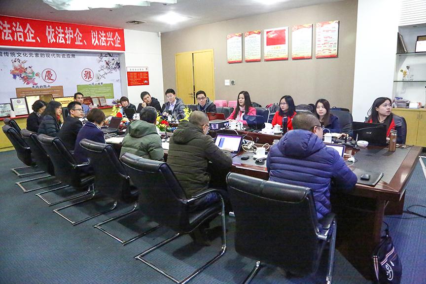
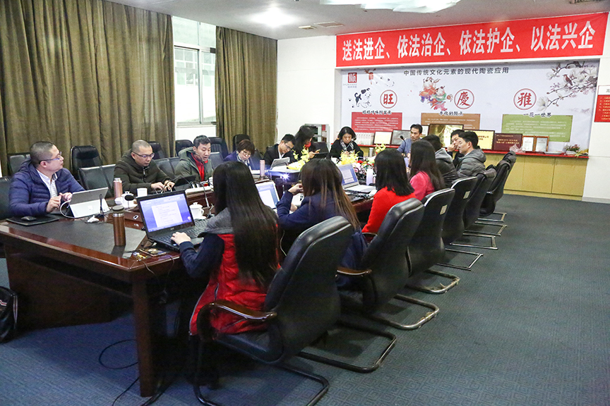

雄关漫道真如铁 而今迈步从头越 ——记顺祥陶瓷2017年深圳公司总结大会
- 1432 |
-
 2018-01-26
2018-01-26
2017年是顺祥内销品牌战略的第二个五年计划的开篇，这一年，深圳顺祥务实不空谈，通过产品整合、渠道整合、服务整合，提高了产品力，实现了全渠道立体化运营——商超、家居馆、电商、礼品多渠道齐齐发力，推动了品牌在终端渠道的进场以及营销活动的落地。
2018年1月15日顺祥陶瓷2017年度内销工作总结大会在总公司隆重召开，总公司董事会林大祥董事长、林伟河总经理、林燕芬副总经理、林妙芬副总经理和公司咨询顾问中泽品略董事长刘革老师应邀参加了会议。会上深圳公司总经理周吉权就2017年内销的总体经营数据和重要经营策略等向董事会做了详尽的汇报并明确了2018年的重要工作目标，强调了2018年内销的经营策略——服务深化和渠道深化，要求做到聚焦产品分销深入终端、营销活动深入终端、培训陈列深入客户端。林伟河总经理对周总的汇报给予了高度的评价，认为深圳顺祥2017年达到了预期的目标，这个成绩来之不易，同时也提出了顺祥有强大的生产保障体系、有突破传统、努力创新的能力和决心，顺祥上下一定要增强品牌自信，坚定地以打造中国日用陶瓷领军品牌为目标。之后深圳公司各部门负责人对各自2017年的工作做了全面的总结并给出了详细2018年行动计划，林总希望我们每个部门负责人在部门的管理能力上要不断提升，并考虑在做好有为而治同时如何转为无为而治，要关注人才的培养和引进，逐步强大团队的整体实力。刘革老师也给我们的工作提出的指导意见，指出无论是公司业务还是公司内部各部门的业务都是可以分为三个层次，即提高业务、成长业务、战略业务，负责人要会合理分配资源，只要目标清晰、工作到位、继续努力，一定可以获得可持续的发展。
2018年又是一个新的开始，顺祥内销品牌之路虽艰辛漫长，但每年的业绩都得以持续健康发展，在国内的陶瓷行业内大家已充分地认可了顺祥品牌。就如林总所说“雄关漫道真如铁，而今迈步从头越”，随着国家供给侧改革的深化，新的时代，顺祥人应以打造民族精品为己任，勇敢踏上无限挑战的新征程，为实现中国领军品牌的伟大梦想而努力！